Wheaton Connections (HW #11)
I am working with Sara on creating a new way for looking at the Wheaton Connection options for students attending Wheaton College. When looking at the complete list of available connections on the Wheaton website, it's not possible to sort them according to any kind of criteria. We hope to change that with our project, which will allow a student to sort the connections by division, department, semester offered, etc.

We also added a force-directed svg graph that provides a visual way to see which courses are connected to one-another. You can move the points and see the graph respond directly, and because it's an svg graph, the course titles are searchable using the basic CNTL/CMD + F find feature. This graph gets its data from regex searches in python which generate the proper necessary JSON. It is built using HTML, javascript, and the D3.js library.

When working on this, we used issues in Github to break down the different goals we had(ve) for the project, as well as report bugs so that we could get help from each other on problems we were having. It provided a good place to see what progress was being made, and still needed to be made.
Impress Presentation (HW #8)
Impress.js is an open source framework that works with CSS3 animations to allow users to create presentations that are much more dynamic and creative than the traditional powerpoint. My group used it to create a presentation on the different things that one can do with CSS to modify text, such as changing text decoration, spacing, and direction.
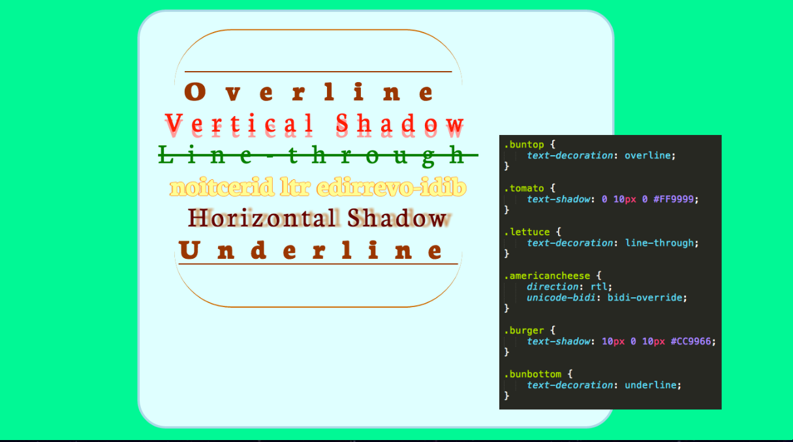Course SVG (HW #9)
Using SVGs in HTML, I made a graphical representation of the class occupancy in each math and computer science course from the fall 2014 semester at Wheaton College. In addition, specific effort was put towards making the visual accessible for a variety of people: a sharp contrast in colors is used, there is no loss of information when you zoom in drastically, and the visual information is listed in text portions of each SVG element (i.e., software can read this aloud).

Professor Website
I redesigned the website for Professor James Helmreich (i.e. my father). Essentially I took it from a not-so-nice shade of orange to a much cleaner basic bootstrap scheme. I also added a carousel of photos to the header on the homepage. In the future, I would like to create a Java app that will allow the user to view the basic interaction of a regression line compared to its quartile regression lines from a small dataset. (He's a Statistics Professor.)
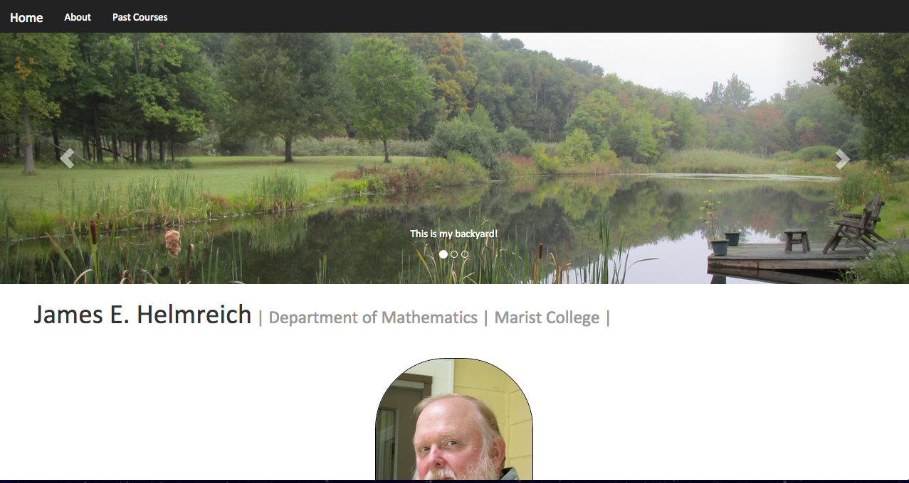Final Project
Created a web app called 'Doggie Deets,' centered around the idea of an information management/database system for businesses such as Vet's offices or Shelters. One can create dog profiles for each dog. The app includes searching capabilities, and allows all API requests (the basic CRUD functions). In addition, if a dog has a GPS tracking unit, a map showing the dog's current location is available.
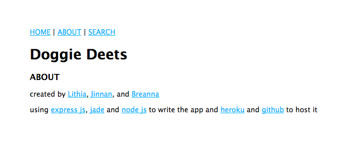The app combines a lot of tools we have used over the course of the semester, as well as many new ones. It was created using the Express.js framework for Node.js, and we hosted it using Heroku. The maps are generated using the Google's Map Embed API, and we also used Jade to allow us to embed javascript variables into our html pages.
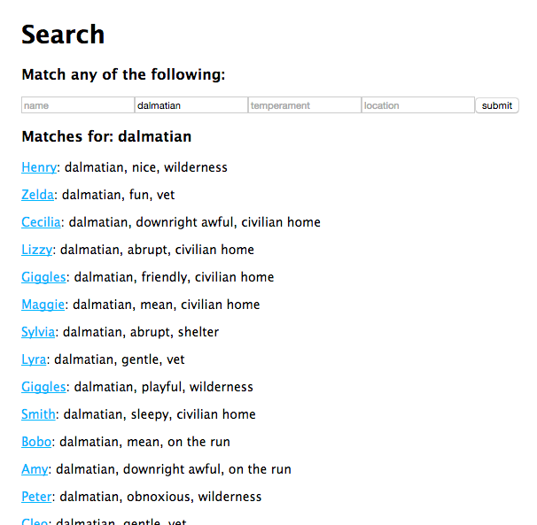Gatra GEOJson (HW #10)
This assignment allowed me to work with a new format, GEOjson. Using GEOjson, one can create dynamic maps for the web. Here a map was created to show the stops on the Wheaton Gatra route. Included is a lot of meta information, such as stop times and average travel times between stops.
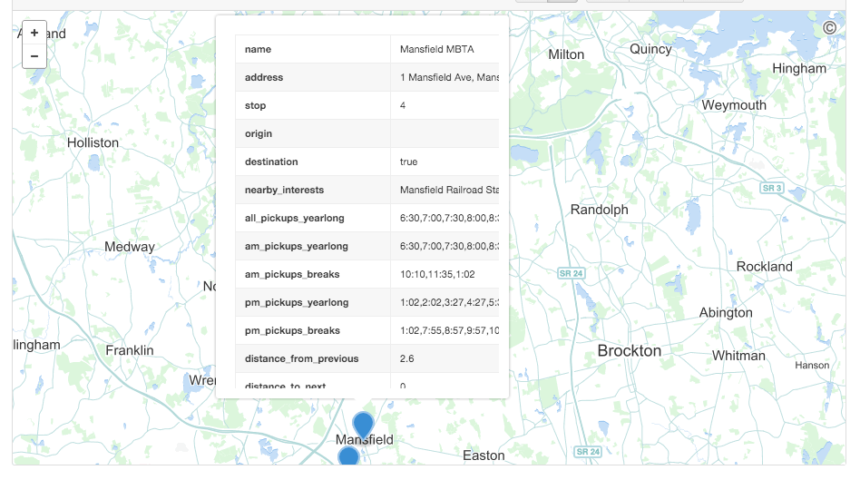In addition, this project was collaborative, as a fellow classmate of mine, Devin, assisted me. He created a pull request to add a line on the map connecting the different points in the Wheaton gatra route.
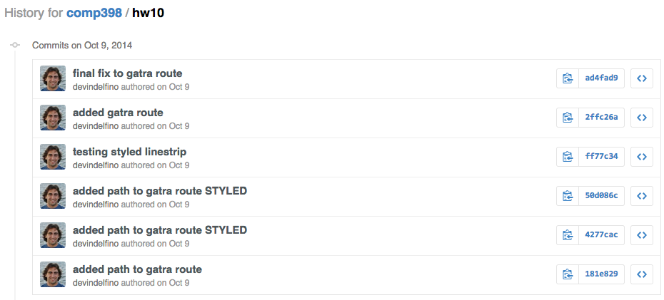Linked List (HW #1/#2)
Using python, I implemented code that would allow the user to created a linked list. The code allows for various features, such as adding a node, searching the list for a particular matching value, and populating the linked list with data from a .csv file.
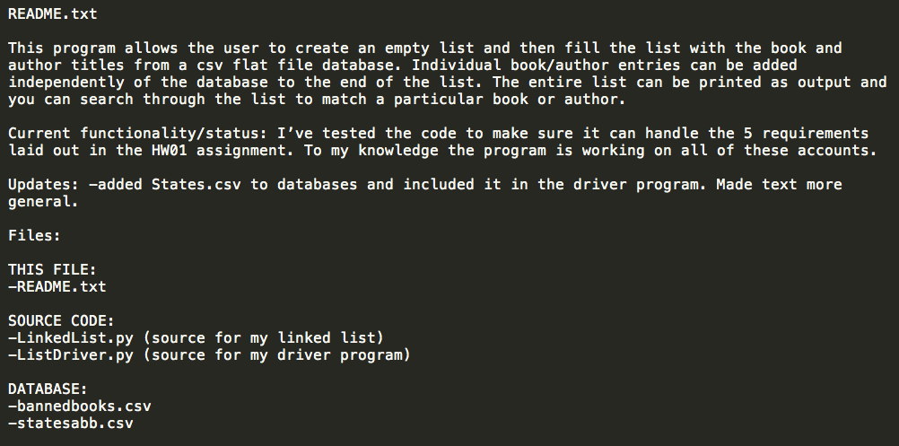In the second homework assignment for the course, I went back and properly commented and structured my code, according to Google's Python Style Guide.

Populate Mongo Database
This assignment introduced me to databases. Mongo is a database management system that integrates with a variety of different drivers. While documents can be added through the mongolab website, everything can also be done programmatically. Here I created a database collection using javascript and Mongoose, a object modeling module for Node.js.
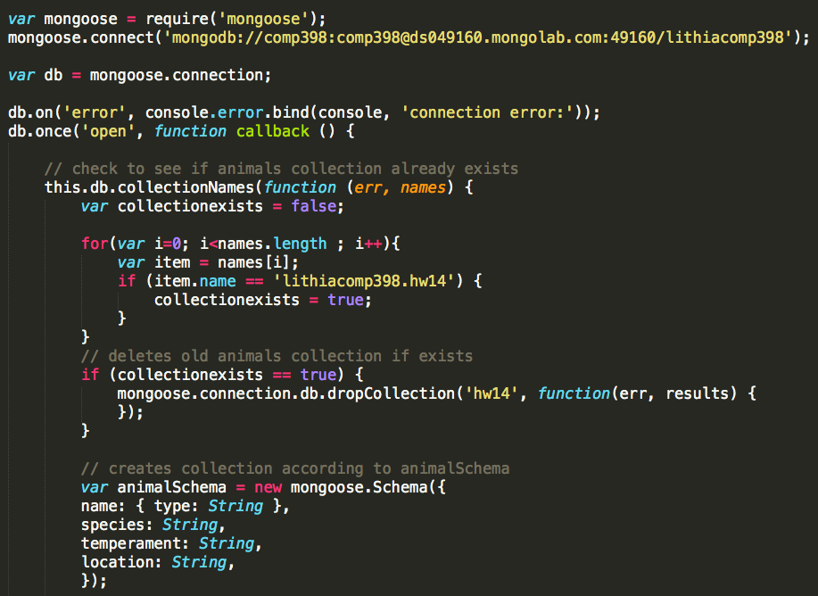The populate.js program first checks to see if the desired collection already exists, and if it does, it deletes it, and then recreates and populates it from scratch. Each document is about a different dog, with each dog being randomlly generated a name, breed, temperament, and location. This assignment was a great percursor for my Final Project, which uses Mongodb in a similar manner.
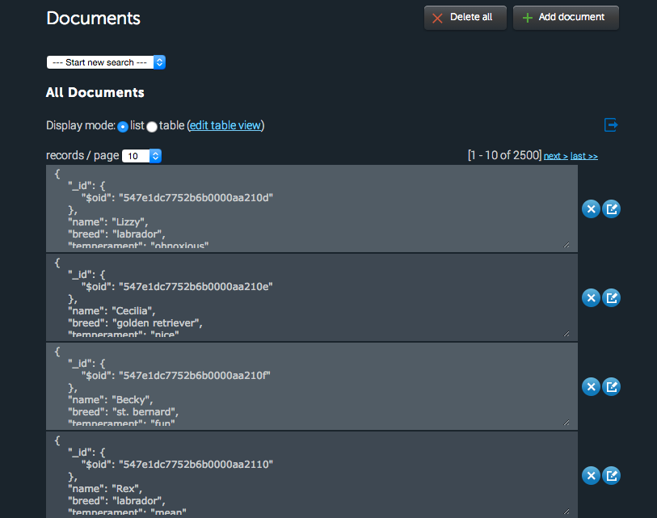Lexos
Text analysis and visualization tools. I rebuilt a graph using D3, Javascript, and HTML on the frontend, Python on the backend (and Jinja piecing everything together) that allows you to view the moving average of how often a word, string or regular expression appears over the course of a text. The updated graph includes support for RegEx queries and for displaying multiples queries at once, as well as focus brushing and zooming, and tooltips to display x,y coordinates. I additionally added the ability to download the SVG.
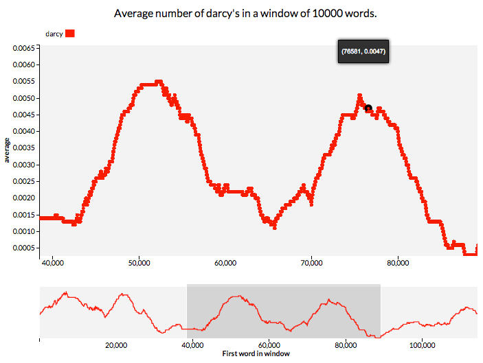Scientific Computing
Using MATLAB, I've completed a series of programming projects on topics in Scientific Computing, including root finding, time-stepping, and system modeling. These allowed me to work with a language that has a much different purpose than most other programming languages I've used in the past -- MATLAB, as the title suggests, is primarily used for mathematical computing of extremely large datasets. Below is a photo of the output of using relaxation methods (Gauss-Seidel and Jacobi) to solve LaPlace's Equation.
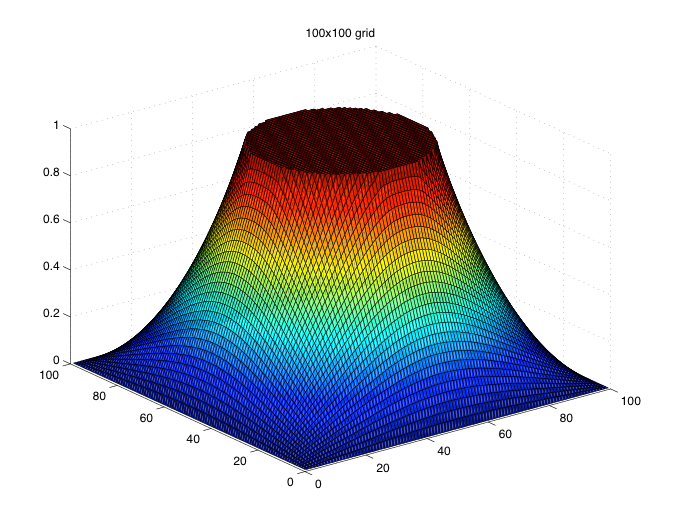